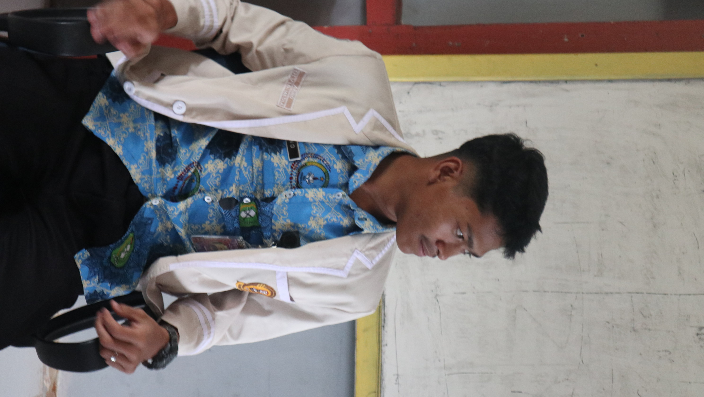

Petunjuk Pemilihan
Pilih Kandidat
Klik tombol "Pilih" pada kandidat pilihan Anda
Konfirmasi Pilihan
Konfirmasi pilihan Anda sebelum menyimpan
Lihat Hasil
Pantau perkembangan hasil pemilihan secara real-time
Kandidat Ketua OSIS

No. 1
RISKI
Kelas XE
Visi & Misi:
- • Meningkatkan kualitas akademik siswa
- • Mengembangkan bakat non-akademik
- • Memperkuat solidaritas antar siswa
- • Digitalisasi sistem sekolah

No. 2
BAYU
Kelas XA
Visi & Misi:
- • Sekolah ramah lingkungan
- • Program beasiswa untuk berprestasi
- • Ekstrakurikuler inovatif
- • Kolaborasi dengan alumni
No. 3
ARDINO
XIA
Visi & Misi:
- • Teknologi dalam pembelajaran
- • Kewirausahaan siswa
- • International exchange program
- • Mental health awareness
Hasil Sementara
0
Suara Kandidat 1
0
Suara Kandidat 2
0
Suara Kandidat 3